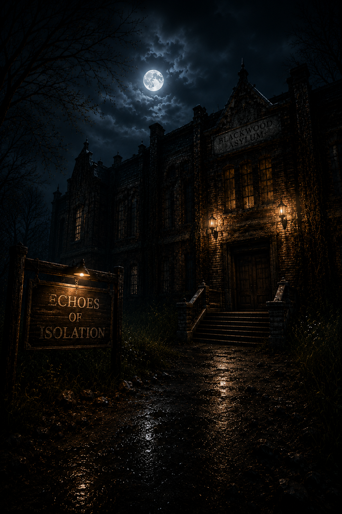

A Voice-Responsive Paranormal Horror Game
where silence is survival.

Echoes of Isolation is a first-person survival horror experience built inside an abandoned psychiatric hospital — a place where the walls remember every scream, every whisper, and every desperate plea for escape.
Unlike any horror game before it, Echoes of Isolation introduces a groundbreaking microphone-based gameplay mechanic: your real-world voice is your greatest weapon — and your most dangerous liability. Breathe too loudly, and something will hear you. Whisper a ritual incantation, and the veil between worlds grows thin.
Built on Unreal Engine 5 with real-time audio analysis via the Unreal Audio Capture API, every sound you produce is captured, measured, and translated into game-world consequences. The result is psychological horror so immersive, your instinct is to hold your breath.
You are trapped inside Psychiatric Hospital. The only way out is through a forbidden ritual — but completing it will wake everything that sleeps within these walls.
Manage your steps, control your breath, and navigate total darkness. The hospital punishes the reckless and rewards the methodical — every move carries consequence.
Real-time audio input shapes the world around you. Ambient volume, frequency detection, and silence thresholds drive enemy states, environmental events, and paranormal escalation.
Discover hidden wards, collect ritual relics, and solve cryptic puzzles to unlock deeper secrets of Hospital — every corridor holds a clue and a consequence.
Eight integrated systems designed to make horror personal, reactive, and inescapable.
Microphone input is sampled at 60fps using Unreal Audio Capture. Volume amplitude, frequency, and silence duration are all parsed to trigger distinct game events.
Advanced Behavior Trees drive enemy state machines . Enemies dynamically patrol, investigate sounds, enter hunt mode, and de-escalate based on audio cues.
A dynamic psychological meter that degrades upon prolonged darkness, enemy proximity, or paranormal events. Hallucinations, audio distortions, and screen corruption manifest at critical levels.
Eight unique relic-collection puzzles unlock stages of the final ritual. Ritual sequences require specific voice commands spoken aloud — silence your fear to survive.
A full horror-themed inventory with relic tracking, item combination, and limited carrying capacity — forcing strategic decisions in a world where every second counts.
Procedurally triggered paranormal sequences: flickering lights, whispered voices, shadow movements, poltergeist activity — all scaled to your current sanity and noise level.
Non-linear hospital layout with 5 unique wards, hidden rooms, lore journals, and environmental storytelling. Every corner reveals a fragment of Hospital's dark history.
The climactic finale: complete a multi-stage ritual while all enemies converge on your position. Your voice must carry the incantation — but every word you speak makes you more vulnerable.
Three entities, three behaviors — each triggered by your voice, your fear, your choices.
A silent, looming figure draped in tattered habit. She does not run — she glides. She is drawn exclusively to sound and appears when ambient noise exceeds critical thresholds.
An apparition in bloodied surgical attire, still holding instruments from an operation never completed. He activates when sanity falls to critical levels — a manifestation of your fracturing mind.
A collective of featureless silhouettes that emerge from walls, floors, and ceilings. They swarm when ritual activity is detected — drawn to the energy of forbidden ceremonies.
You awaken at the gates of Ashwood Psychiatric Hospital. The gate shuts behind you. Silence is your only ally.
Navigate five distinct hospital wings — each with unique atmospheric horror, environmental puzzles, and lurking threats.
Eight ritual relics are hidden across Ashwood. Finding each triggers escalating paranormal activity — nothing in this hospital is without cost.
Environmental puzzles lock your path forward. Voice-activated mechanisms, symbol sequences, and cryptic journals hold the solutions.
As ritual power grows, the three entities awaken — Nun Ghost, Surgeon Spirit, and Shadow Patients converge on your location. Control your voice. Control your fear.
Speak the incantation aloud. Eight relics placed. Candles lit. Every word you utter draws them closer. Complete the ritual before they reach you.
The exit opens. Run. Don't speak. Don't breathe. Reach the gate — or become another echo trapped in these walls forever.
Environmental design concepts from the abandoned corridors of Ashwood Psychiatric Hospital.
Experience the atmosphere, fear, and voice-responsive horror of Echoes of Isolation.
The horror doesn't have to be faced alone. The next chapter of Echoes of Isolation opens Ashwood to teams of paranormal investigators — each carrying a microphone, each responsible for one another's survival.
Premium access to the full Echoes of Isolation multiplayer experience — coming with the official launch.
Architected the core gameplay systems, voice-detection audio pipeline. Responsible for the overall technical framework of Hospital.
Designed the whole hospital, paranormal event systems, enemy designs and the enemy behavior systems of Echoes of Isolation.
Under the academic guidance of Dr. Ehsan Ullah Munir, Echoes of Isolation was developed as a research-driven Final Year Project exploring novel human-computer interaction through voice-responsive game mechanics.